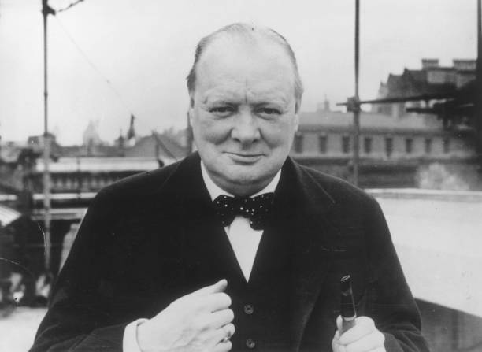
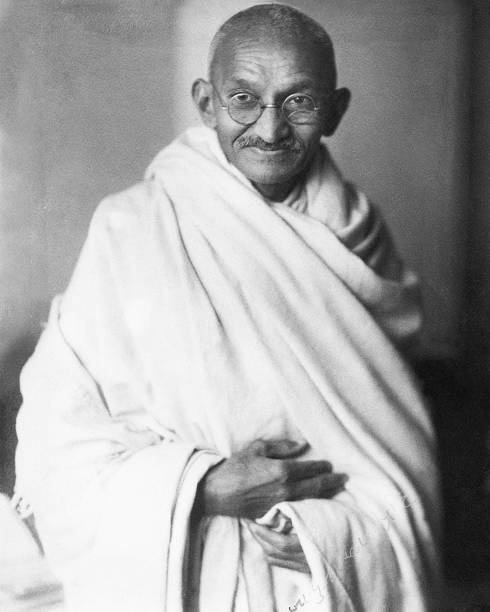
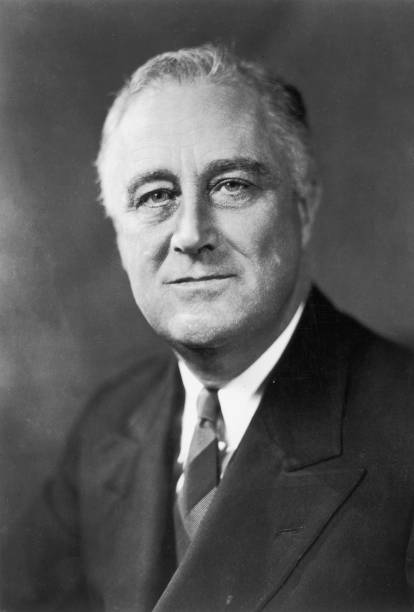
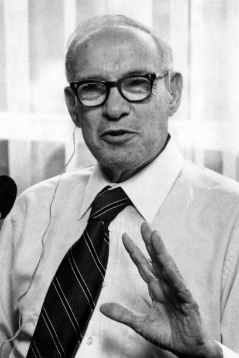

"The only way to do great work is to love what you do."
— Steve Jobs

"Success is not final, failure is not fatal: It is the courage to continue that counts."
— Winston Churchill

"The future depends on what you do today."
— Mahatma Gandhi
"Success is walking from failure to failure with no loss of enthusiasm."
— Winston Churchill

"The only limit to our realization of tomorrow will be our doubts of today."
— Franklin D. Roosevelt

"The best way to predict the future is to create it."
— Peter Drucker